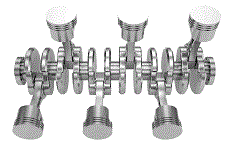

There are several types of engines but the most famous are:
- The 4 cylinders in line in: the audi S3, the ford focus st ecoboost, the porshe 718 boxter, the subaru brz, the ford mustang ecoboost and many others
-The inline 6 in: BMW M3 E36 3.2, Aston Martin DB4 GT, Porsche 911 2.7 Carrera RS and many more
-The 6-cylinder V in: the alfa Romeo 147 and 156 GTA, the mercedes amg C32, the nissan 350Z, the bmw M3 E46 and many others

-The 8-cylinder V in: the audi s6 C5, the porshe cayenne S, the jaguar XKR, the maserati quattroporte, the mercedes C63 amg and many others
-The 10-cylinder V in: the lamborghini huracan evo, the lexus LFA, the bmw m5 e60 v10 and many more
-The 12-cylinder V in: the Ferrari 812 Competizione, the Aston Martin DB11, the Bentley Continental GT Speed and many more
-The 16 cylinders in W very rarely used because very powerful and very large. It is mainly used by Bugatti in the Veyron, the Chiron, la voiture noire